Outcome
Embodiment similarity recovers some transfer
pi0.5-LIBERO solved 32/50 Panda tasks, 0/50 RBY1 tasks, and 6/50 UR5 tasks. UR5 produces real grasps and placements, but remains far below the training embodiment.
| Model | Embodiment | Normal | Pro object | Pro swap | Pro language | Pro task |
|---|---|---|---|---|---|---|
| pi0.5 base | Panda | 0/10 | 0/10 | 0/10 | 0/10 | 0/10 |
| pi0.5 base | RBY1 right | 0/10 | 0/10 | 0/10 | 0/10 | 0/10 |
| pi0.5 base | UR5e + Robotiq 85 | 0/10 | 0/10 | 0/3 partial | not run | not run |
| pi0.5-LIBERO | Panda | 10/10 | 10/10 | 2/10 | 9/10 | 1/10 |
| pi0.5-LIBERO | RBY1 right | 0/10 | 0/10 | 0/10 | 0/10 | 0/10 |
| pi0.5-LIBERO | UR5e + Robotiq 85 | 2/10 | 0/10 | 2/10 | 0/10 | 2/10 |
Panda robustness
Spatial and task rebinding dominate the Pro failures
Appearance and paraphrase changes largely hold. Swapping positions or changing the task-object binding collapses performance.
Matched recordings
Same task, three distinct outcomes
These task-2 episodes separate model grounding from embodiment transfer. Open any timeline for a full-resolution 3×3 temporal contact sheet.
Failure · base · Panda
Wrong-object approach
The base policy approaches and knocks the red carton instead of manipulating the requested green salad-dressing bottle. LIBERO normalization makes the action scale executable; it does not provide learned task grounding.
{kind=link}
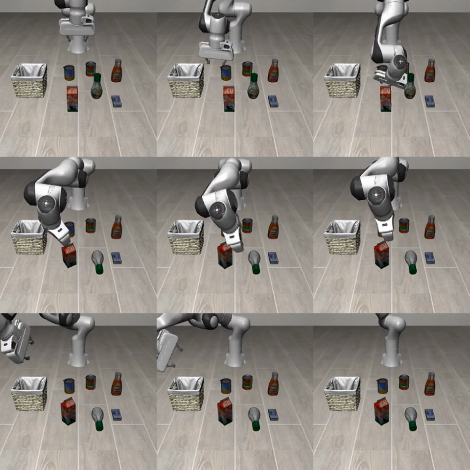
Task 2 · episode 0 · failed
Success · fine-tuned · Panda
Correct grasp and placement
With the same benchmark task order, pi0.5-LIBERO identifies the requested bottle, establishes a grasp, transports it, and satisfies the placement predicate.
{kind=link}
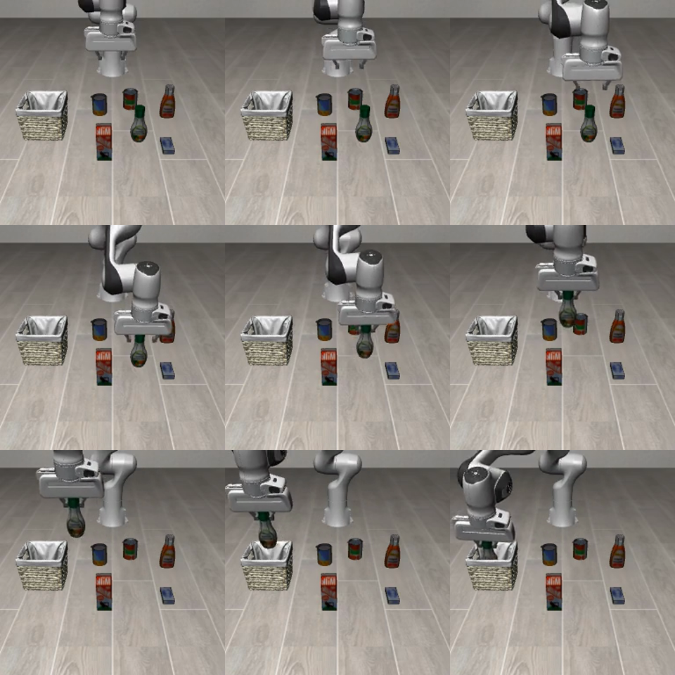
Task 2 · episode 0 · succeeded
Failure · fine-tuned · RBY1
Motion without stable pickup
The RBY1 arm and jaw respond, but the transferred policy does not establish a stable grasp. The failure reaches the 280-step horizon with no simulator or controller error.
{kind=link}
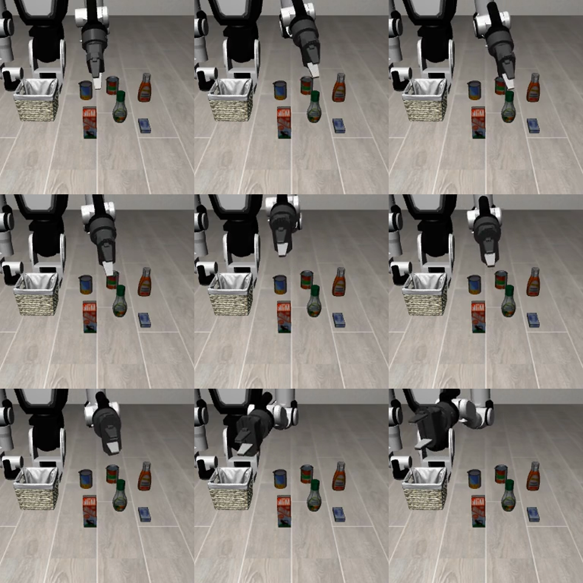
Task 2 · episode 0 · failed
RBY1 failure mode
The gripper works; transfer does not
All 50 pi0.5-LIBERO RBY1 failures timed out at 280 steps. The controller, arm, and jaw were active, so a frozen or incorrectly shaped gripper is not a sufficient explanation.
Observed controller evidence
Across the 10 normal RBY1 episodes, the arm travels meaningful distances and repeatedly commands the gripper closed. Videos show near-object reaching and premature basket motion, but no robust pre-grasp and pickup.
Interpretation: the dominant gap is Panda-to-RBY1 viewpoint, proprioceptive state, pre-grasp geometry, and action-dynamics transfer—not absent jaw actuation.
Median end-effector path0.998 m
Close-command occupancy36.8–60.4%
Jaw gap, open≈ 85.6 mm
Jaw gap, closed≈ 33.6 mm
Runtime/controller errors0
{kind=link}
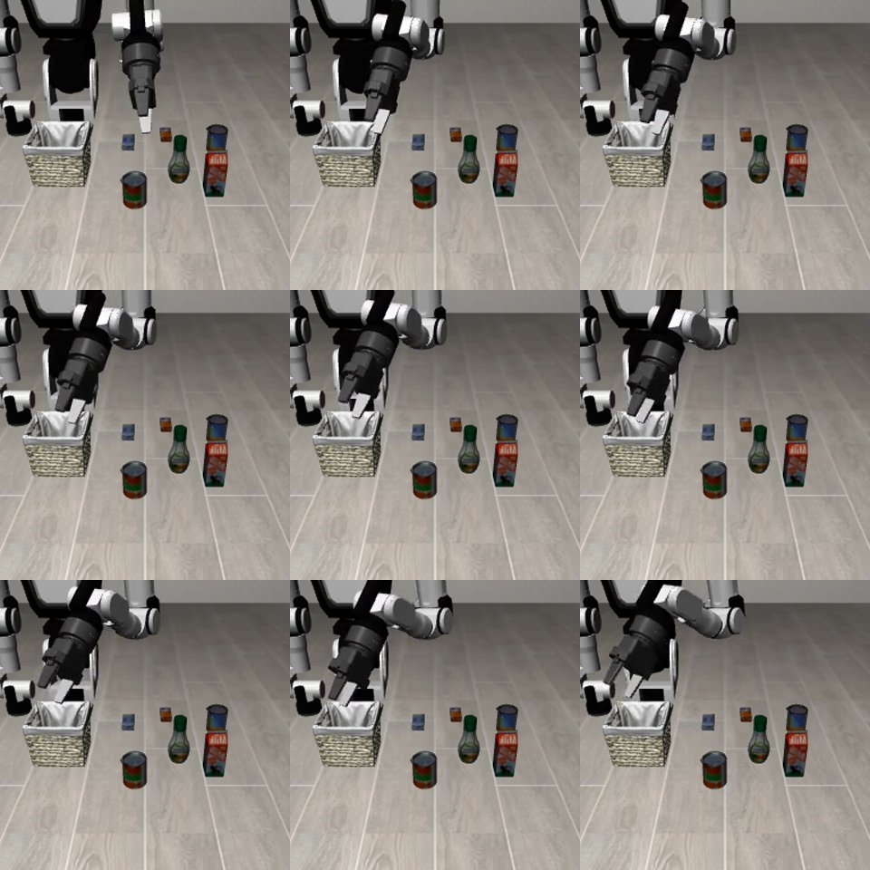
{kind=link}
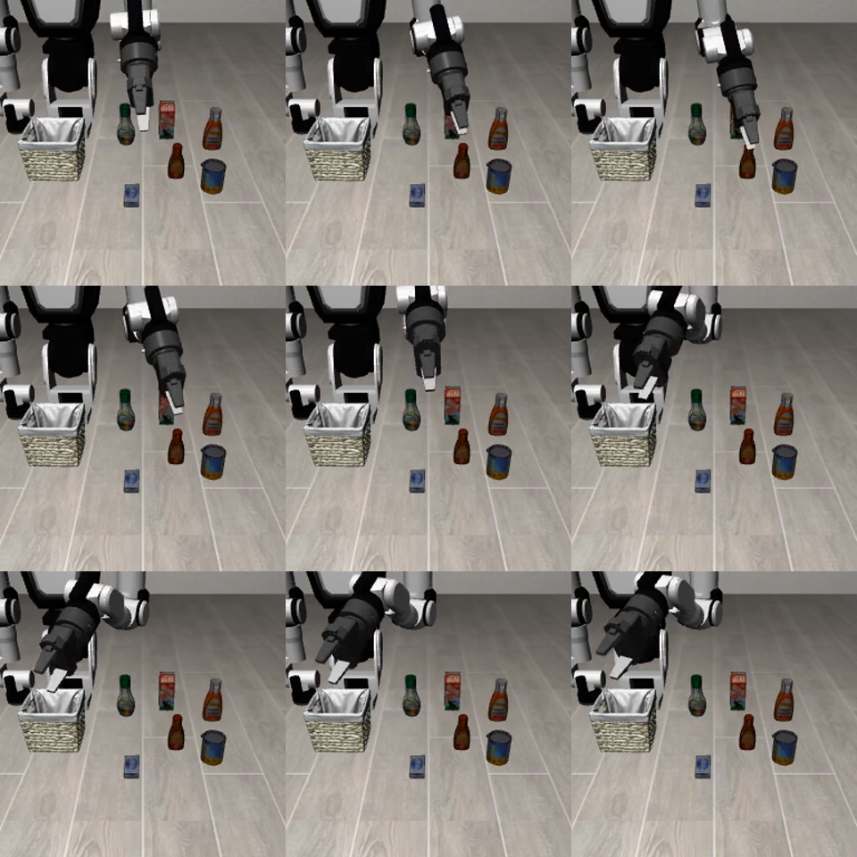
{kind=link}
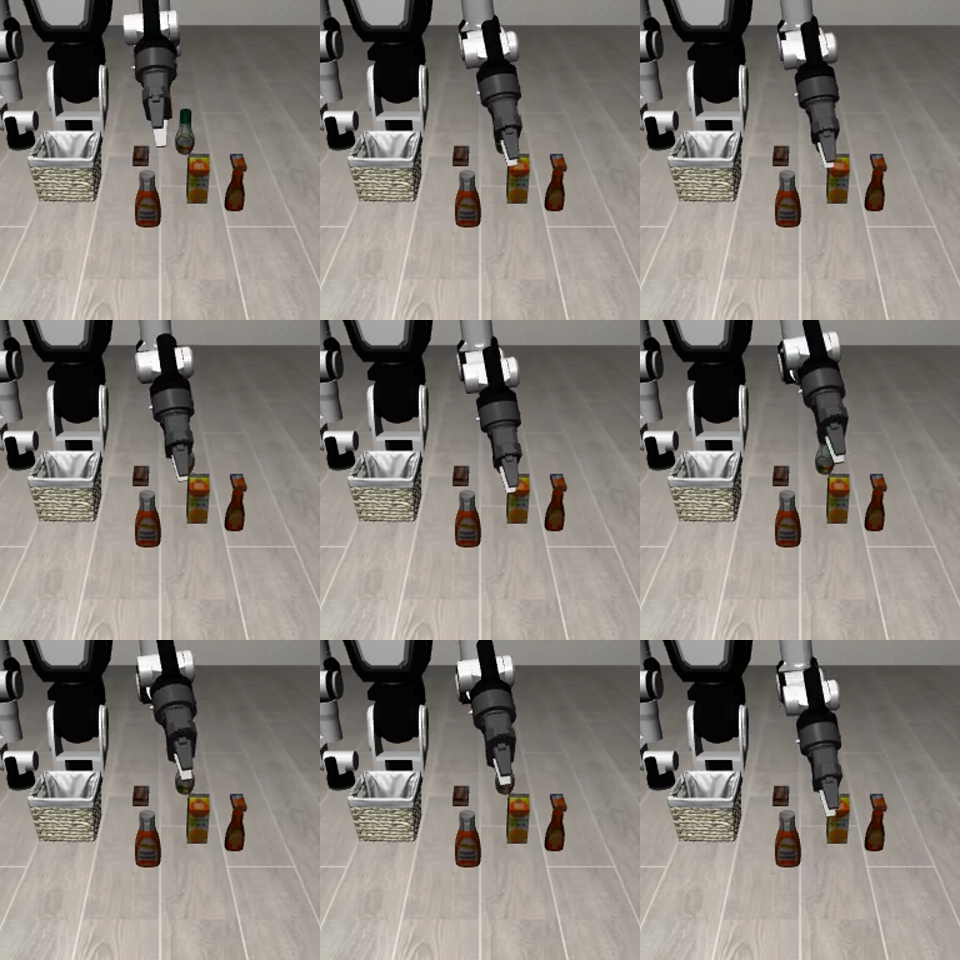
UR5e + Robotiq 85 control
The closer setup does better
UR5 recovers 6/50 successes from the same pi0.5-LIBERO checkpoint that scored 0/50 on RBY1. This supports the similarity hypothesis, while the 32/50 Panda result shows a large remaining embodiment gap.
Native robot and gripper physics
The adapter uses robosuite 1.4's native UR5e and stock Robotiq 85 geometry, joints, actuator, and contact model. Only gripper speed is set to 0.2 to match the Panda binary-gripper response time. The model still receives the same 8-D LIBERO state contract.
Independent proof: the scripted controller grasps salad dressing, lifts it, transports it, and releases it in the basket in 210/280 actions.
Reset jaw gap111.7 mm
Grasp jaw gap36.8 mm
Released jaw gap112.7 mm
pi0.5-LIBERO normal2/10
pi0.5-LIBERO Pro4/40
Success · controller proof
Grasp mechanics are valid
Open, approach, close, lift, transport, and release complete with the stock Robotiq contact geometry.
{kind=link}
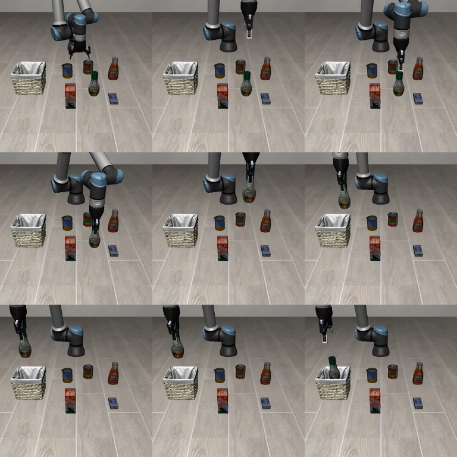
Salad dressing · 210 actions · succeeded
Success · fine-tuned · UR5
Model-driven placement
The policy identifies the requested milk, establishes a stable grasp, transports it, and releases it in the basket.
{kind=link}
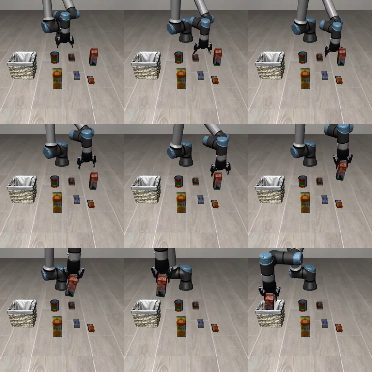
Normal task 7 · 164 steps · succeeded
Failure · fine-tuned · UR5
Stable grasp, wrong object
The policy carries the red/green can toward the basket instead of the requested salad-dressing bottle. This is grounding failure, not missing gripper actuation.
{kind=link}
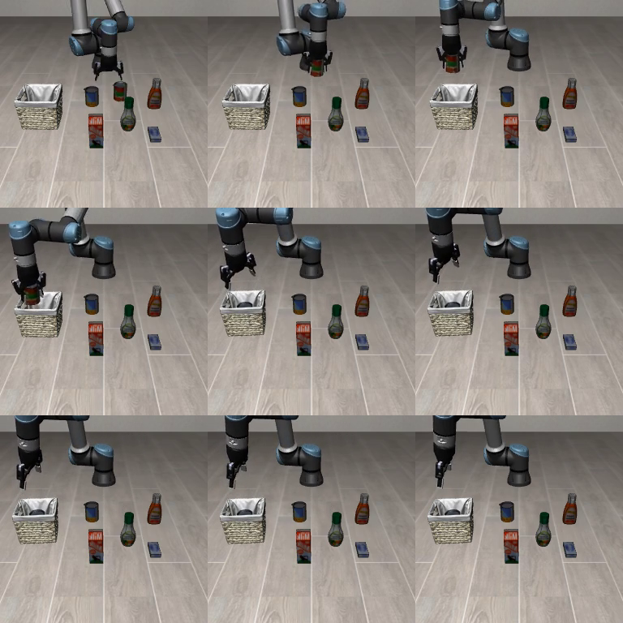
Normal task 2 · 280 steps · failed
2/10
Pro position swap
Task 2 succeeds in 93 steps, demonstrating that some spatial rebinding survives on UR5.
{kind=link}
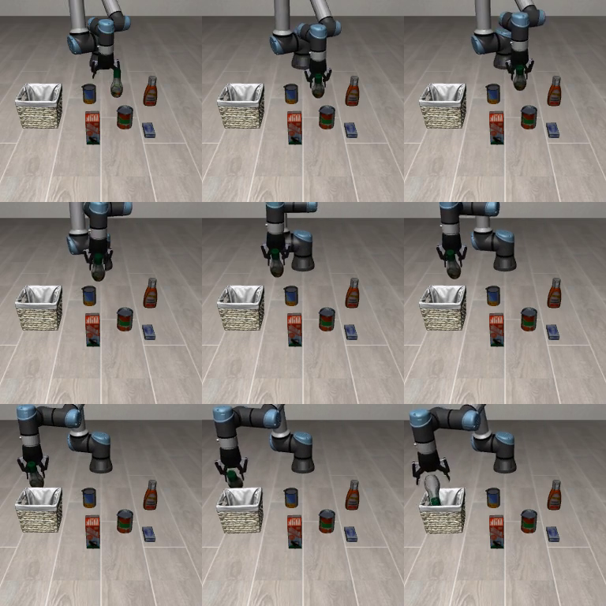
2/10
Pro task rebinding
Task 2 succeeds in 133 steps, showing that the policy can occasionally follow the changed object instruction.
{kind=link}
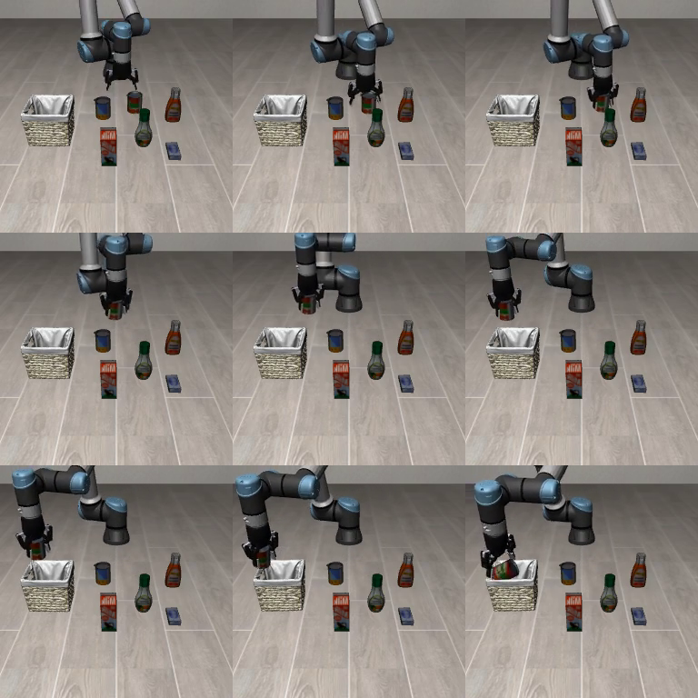
LIBERO-Pro · Panda
Appearance holds; rebinding breaks
Representative recordings make the result more specific than a score: object appearance is robust, language mostly transfers, and the weakest cases expose position and original-task shortcuts.
10/10
Object appearance
Appearance perturbations do not hurt this slice. The policy still selects and places the requested object.
{kind=link}
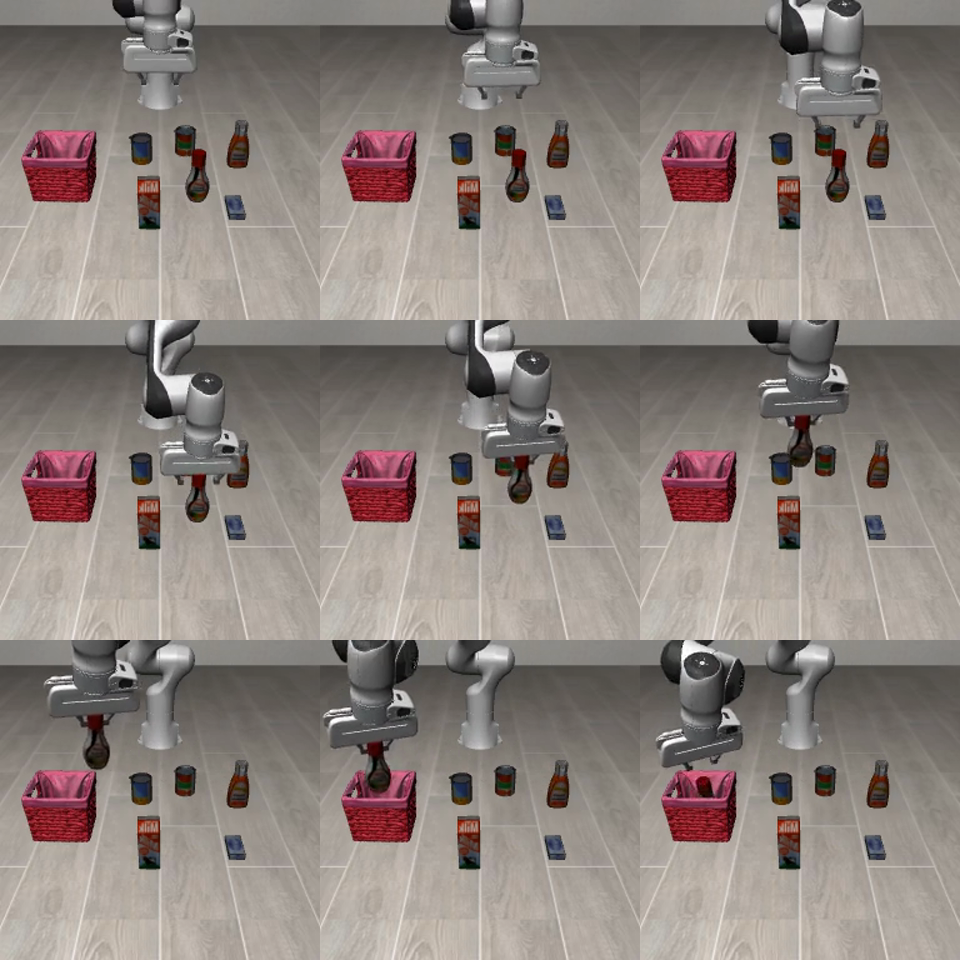
9/10
Language paraphrase
The lone failure carries the correct bottle over the basket but never reaches the placement predicate: a placement/release failure, not an object-grounding failure.
{kind=link}
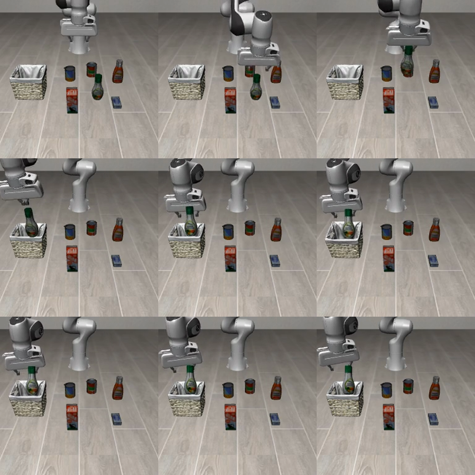
2/10
Position swap
The policy deposits the swapped red/green can and leaves the requested salad-dressing bottle untouched. This is consistent with a positional shortcut.
{kind=link}
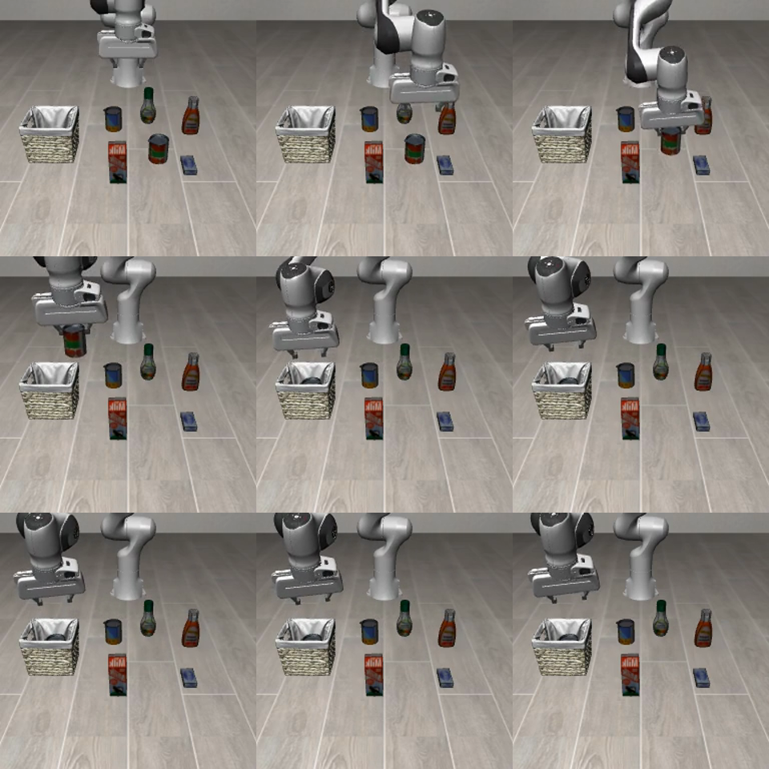
1/10
Task rebinding
The instruction requests tomato sauce, but the policy picks the green salad-dressing bottle tied to the original task index. Original scene/task binding overrides the changed instruction.
{kind=link}
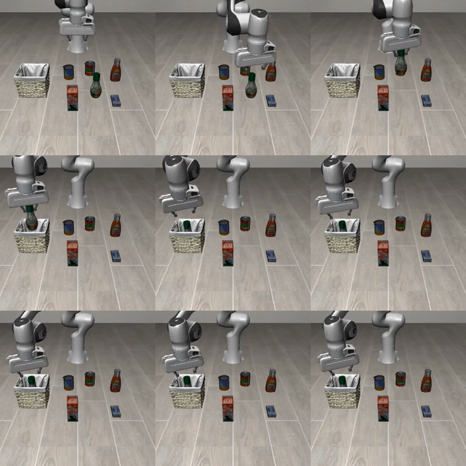
Reproduction
Run the recorded protocol
Run from the repository root. Each model server stays live while four benchmark clients run concurrently. The model samples stochastically, so the protocol and artifacts reproduce; individual binary outcomes need not.
1. Build the cross-embodiment images
docker/build.sh libero_rby1
docker/build.sh libero_pro_rby1
docker/build.sh libero_ur5
docker/build.sh libero_pro_ur52. Start the pi0.5 base server
UV_CACHE_DIR=/tmp/uv-cache uv run --no-sync vla-eval serve \
-c configs/model_servers/pi0/libero_base.yaml -v3. Run the four evaluation cells concurrently
RERUN_ROOT=results/matrix_rby1_fixed_reproduction
RERUN_MODEL=pi05_base
uv run --no-sync vla-eval run -c configs/benchmarks/libero/object.yaml \
--shard-id 0 --num-shards 50 --eval-id rerun-rby1fix-${RERUN_MODEL}-panda-normal-e0 \
--output-dir ${RERUN_ROOT}/${RERUN_MODEL}/panda_normal --record-video -y -v &
uv run --no-sync vla-eval run -c configs/benchmarks/libero_rby1/object.yaml \
--shard-id 0 --num-shards 50 --eval-id rerun-rby1fix-${RERUN_MODEL}-rby1-normal-e0 \
--output-dir ${RERUN_ROOT}/${RERUN_MODEL}/rby1_normal --record-video -y -v &
uv run --no-sync vla-eval run -c configs/benchmarks/libero_pro/object.yaml \
--shard-id 0 --num-shards 50 --eval-id rerun-rby1fix-${RERUN_MODEL}-panda-pro-e0 \
--output-dir ${RERUN_ROOT}/${RERUN_MODEL}/panda_pro --record-video -y -v &
uv run --no-sync vla-eval run -c configs/benchmarks/libero_pro_rby1/object.yaml \
--shard-id 0 --num-shards 50 --eval-id rerun-rby1fix-${RERUN_MODEL}-rby1-pro-e0 \
--output-dir ${RERUN_ROOT}/${RERUN_MODEL}/rby1_pro --record-video -y -v &
wait4. Repeat with pi0.5-LIBERO
Stop the base server, start the fine-tuned server, set RERUN_MODEL=pi05_libero, and repeat the four commands above.
UV_CACHE_DIR=/tmp/uv-cache uv run --no-sync vla-eval serve \
-c configs/model_servers/pi0/libero.yaml -v5. Run UR5 normal and Pro
uv run --no-sync vla-eval run -c configs/benchmarks/libero_ur5/object.yaml \
--shard-id 0 --num-shards 50 --eval-id ur5-${RERUN_MODEL}-normal-e0 \
--output-dir results/matrix_ur5_reproduction/${RERUN_MODEL}/ur5_normal \
--record-video -y -v
uv run --no-sync vla-eval run -c configs/benchmarks/libero_pro_ur5/object.yaml \
--shard-id 0 --num-shards 50 --eval-id ur5-${RERUN_MODEL}-pro-e0 \
--output-dir results/matrix_ur5_reproduction/${RERUN_MODEL}/ur5_pro \
--record-video -y -v6. Restore ownership and merge artifacts
docker run --rm -v "${PWD}/${RERUN_ROOT}:/data" --entrypoint chown \
ghcr.io/allenai/vla-evaluation-harness/base:latest \
-R "$(id -u):$(id -g)" /data
find ${RERUN_ROOT} -name 'recording-*.sqlite' -print0 \
| xargs -0 -n1 uv run --no-sync vla-eval merge --dbProvenance
Pinned inputs and artifact audit
The tracked harness revision is paired with exact runtime image hashes because the evaluated RBY1, UR5, and LIBERO-Pro adapters were still working-tree changes at run time.
- Harness revision at start
- e1ee9ad
- OpenPI revision
- 981483dca0fd9acba698fea00aa6e52d56a66c58
- Base checkpoint
- gs://openpi-assets/checkpoints/pi05_base
- Base normalization stats
- gs://openpi-assets/checkpoints/pi05_libero
- Fine-tuned checkpoint
- gs://openpi-assets/checkpoints/pi05_libero
- MuJoCo Menagerie RBY1
- da76818e269b82289eba39808e2fb91d679d6994
- LIBERO-Pro
- eafdb809426b13153aa1e4c42d6601844217dfec
- Normal RBY1 image
- sha256:453113e75925bdb591a2adb1f84be210efb9e1b2a59da1bbc488f97abf095378
- Pro RBY1 image
- sha256:c929ffe4a35241de93bf61e9eedf7a219c6aa34568ce38a972f1025dc293990f
- Normal UR5 image
- sha256:a0534329c0d48ddc7136381618847d57fa8276e51b60891259c2d1490c1a6ca7
- Pro UR5 image
- sha256:15a860daca793d65a8fb1331e38e345e0434d22446817b04f04ad32bd0b98d55
- UR5 stack
- robosuite 1.4 · UR5e · Robotiq85Gripper
- Hardware
- 1× NVIDIA RTX A6000 · 48 GiB
Artifact audit passed: the original Panda/RBY1 bundle has 200 complete episodes. The UR5 addition has 73 completed rows, 73 JSONL trajectories, 73 finalized MP4s, four SQLite databases, and eight aggregate JSONs. One retained temporary MP4 marks the intentionally interrupted base-Pro run; it is not counted as an episode.